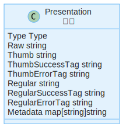

展示¶
从收集的文件中获取到的展示方式。
每个文件可对应任意个数的展示方式。
结构¶
本节的相对路径都相对于 文件存储 files 目录。
Type Type
展示类型，和 转码 类型对应。
Raw string
原始文件绝对路径。
Thumb string
缩略尺寸文件相对路径。
ThumbSuccessTag string
ThumbErrorTag string
Regular string
常规尺寸文件相对路径。
RegularSuccessTag string
RegularErrorTag string
Metadata map[string]string
文件元数据，可能的值见下方。
元数据¶
width
图片或视频宽度
height
图片或视频高度
frame-rate
视频帧速率
frame-count
视频总帧数
duration
持续时间长度
first-frame
第一帧的帧编号
last-frame
最后一帧的帧编号
pixel-format
图像像素格式
annotation
标注 SVG 数据。